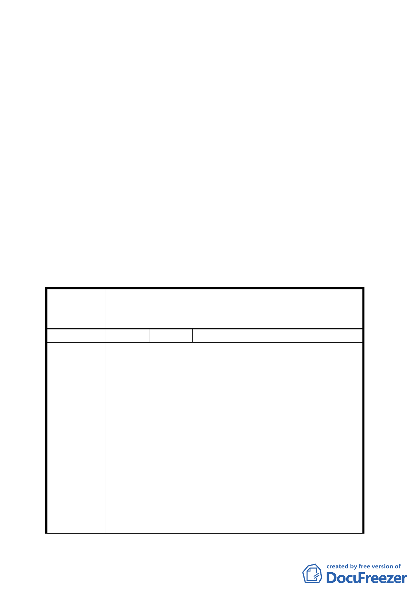

以銜接研究院路。
2.上開路段涉及隧道及平面路段之設計，應符合以下原則，
以配合兩側交通系統，各路段設計並應符合市區道路工程
設計規範：
（1）隧道部分：單向隧道斷面淨寬 10.5 公尺（配置 0.5 公尺
維修通道、2 車道各 3 公尺、機車專用道 2
公尺、人行暨自行車道 2 公尺）。
（2）平面路段： 路寬 23 公尺，配置雙向各 2 車道 7 公尺，
路側配置人行道暨自行車道共 4.5 公尺。其
中連接至四分溪北側防汛道路之路段，配置
雙向各 1 車道及人行道。
二、公民或團體所提意見審決如後附綜理表。
臺北市都市計畫委員會 公民或團體陳情意見綜理表
案名
擬定臺北市南港區中南段 2 小段 302-1 地號等機關用地
（供國家生技研究園區使用）及中南段 1 小段 628 地號
等機關用地（供中央研究院及國防部使用）細部計畫案
編號
陳情理由
1 陳情人 中研社區協進會陳進華理事長
為配合國軍 202 兵工廠舊址上興建「國家生物科技
園區」，臺北市政府將「規範該園區於後續開發配置時，
應留設園區內之聯絡道路，銜接東側之研究院路、四分
溪防汛道路，與北側穿越忠孝東路銜接興中路之隧道路
段，作為聯絡南港舊庄地區與南港車站之服務性道
路」。而此遂道出口，一處為四分溪防汛道路，一處為
研究院路二段 12 巷底之勤力橋旁。
中研社區協進會全體居民對於市政府擬將遂道出
口一處置於研究院路二段 12 巷底之勤力橋旁，表示堅
決反對，並經理監事會 5 月 15 日決議，請求市府必須
將隧道出口遷離 12 巷底之勤力橋旁，理由如下：
第一，如此重要之隧道出口，不應置於居民所住之巷
內，而應直接連至研究院路等幹道上。
第二，該出口處為中研公園、思亮新村、中研里居民最
集中之處，更是中研院附設幼稚園所在地，原為
-4-